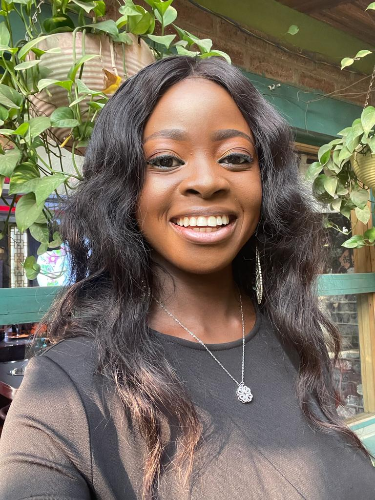

About Me
My name is Oreoluwa Olajide. I am enrolled into the Frontend track at Altchool of Engineering.
My Goals
My goal for this diploma course is to make a smooth transition into the Tech Industry. I hope to achieve this by learning and working on tasks that will provide me with relevant experience which will enable me to build my portfolio and land a good job
My Educational Qualifications
-
Altschool of Engineering.
- Diploma in Frontend Engineering (in view) -
University of Ibadan.
- B.Sc. Microbiology, First Class Honours (March 2015 to May 2019). -
Eudora City Business School.
- Executive Human Resource Program (September - December 2021) -
McKinsey & Company.
- Forward Africa Program (May – September 2021)
My Job Experiences
- Company - HReade Limited
- Role - Human Resources Intern (March 2021- August 2021)
- Role - Human Resources Analyst (August 2021 – April 2022)
- Company - Beloxxi Industries Limited
- Role - Quality Control Assistant (July 2019 to May 2020)
My Hobbies
My hobbies are;
- Singing
- Watching movies
- Sleeping
My Skills
- Critical thinking and Problem solving
- Planning and Organizing
- Communication
- Collaboration
- Analyzing
- Applying Expertise and Technology
- Learning and Researching